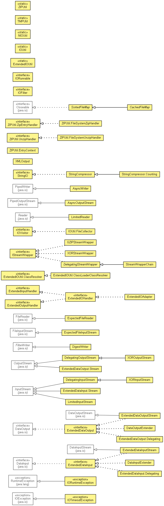

Overview
Package
Class
Use
Deprecated
Index
Help
PREV PACKAGE
NEXT PACKAGE
FRAMES
NO FRAMES
All Classes
Package org.eclipse.net4j.util.io
Interfaces and classes for I/O.

Interface Summary
ExtendedDataInput
ExtendedDataOutput
ExtendedInputHandler
ExtendedIOHandler
ExtendedIOUtil.ClassResolver
ExtendedOutputHandler
IOFilter<T>
IORunnable<IO extends Closeable>
IOVisitor
IStreamWrapper
StringIO
ZIPUtil.UnzipHandler
ZIPUtil.ZipEntryHandler
Class Summary
AsyncOutputStream
AsyncWriter
CachedFileMap<K extends Comparable<K>,V>
DataInputExtender
DataOutputExtender
DelegatingInputStream
A
DelegatingInputStream
contains some other input stream, which it uses as its basic source of data, possibly transforming the data along the way or providing additional functionality.
DelegatingOutputStream
This class is the superclass of all classes that filter output streams.
DelegatingStreamWrapper
DigestWriter
ExpectedFileInputStream
ExpectedFileReader
ExtendedDataInput.Delegating
ExtendedDataInput.Stream
Deprecated.
ExtendedDataInputStream
ExtendedDataOutput.Delegating
ExtendedDataOutput.Stream
Deprecated.
ExtendedDataOutputStream
ExtendedIOAdapter
ExtendedIOUtil
ExtendedIOUtil.ClassLoaderClassResolver
GZIPStreamWrapper
IOUtil
IOUtil.FileCollector
LimitedInputStream
LimitedReader
NIOUtil
SortedFileMap<K extends Comparable<K>,V>
StreamWrapperChain
StringCompressor
StringCompressor.Counting
TMPUtil
XMLOutput
XORInputStream
XOROutputStream
XORStreamWrapper
ZIPUtil
ZIPUtil.EntryContext
ZIPUtil.FileSystemUnzipHandler
ZIPUtil.FileSystemZipHandler
Exception Summary
IORuntimeException
IOTimeoutException
Overview
Package
Class
Use
Deprecated
Index
Help
PREV PACKAGE
NEXT PACKAGE
FRAMES
NO FRAMES
All Classes
Copyright (c) 2004 - 2011 Eike Stepper (Berlin, Germany) and others.